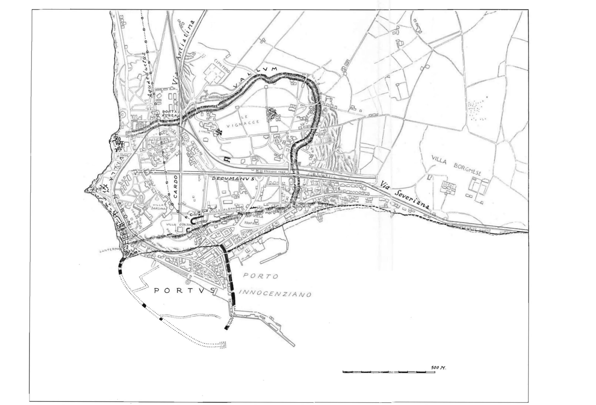
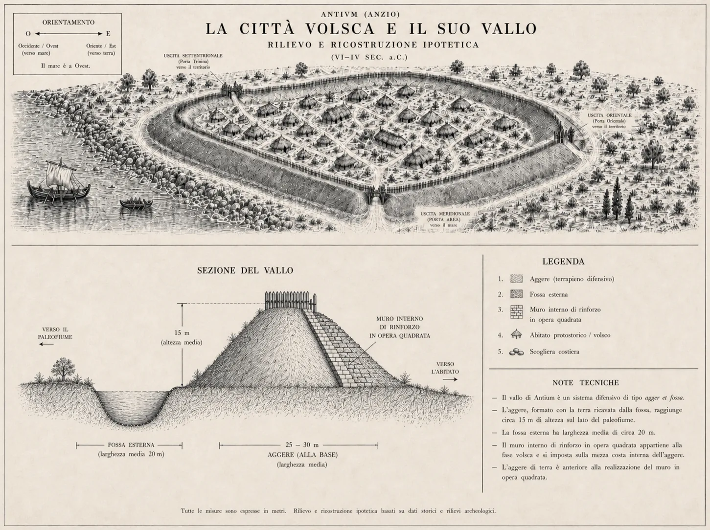
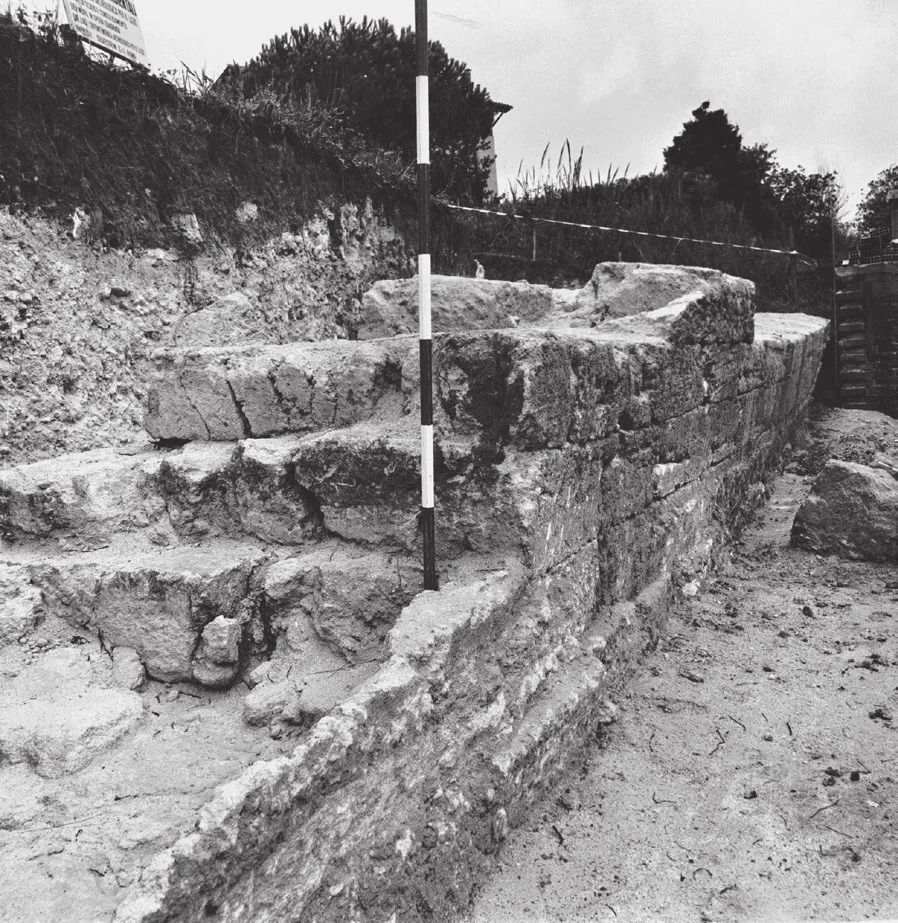

Il Vallo di Antium
Tremila anni di difese: la più estesa cinta protostorica del Lazio costiero, dal Bronzo Finale ai Volsci fino all'età imperiale.
Come può un monumento portare il nome di un popolo arrivato secoli dopo la sua costruzione? È la prima stranezza del cosiddetto «Vallo Volsco» di Anzio, la difesa preromana più integra di tutto il Lazio costiero. Quel nome si è depositato nella tradizione locale come un fossile nel macco, ma è sbagliato. L'architetto Paolo Prignani, che ha studiato a lungo il territorio anziate, propone «Vallo Italico-Tirrenico»; questa guida lo chiama vallo latino-tirrenico, perché gli scavi indicano come costruttori i Latini della costa, prima dei Volsci.
Gli scavi spiegano perché. Nel 1980, sotto il muro in blocchi, è comparso uno strato di materiali della prima età del Ferro: per gli archeologi la prima difesa fu alzata tra il IX e l'VIII secolo a.C. I Volsci si stabilirono qui solo nel V secolo. Tre secoli dopo, almeno. (Le date ancora più antiche, l'XI secolo misurato col radiocarbonio, vengono da Colle Rotondo, otto chilometri più a nord: ne parliamo più avanti.)
E poi la seconda stranezza. Antium viveva di mare: il Tirreno su due lati, un porto naturale che già gli autori antichi conoscevano. Eppure il suo muro più alto, il terrapieno più massiccio, guardava dall'altra parte. Verso la terra. Verso Satrico, Ardea, Aricia, Lanuvio. Perché una città di mare si difendeva dalla campagna? Chi alzò quel terrapieno sapeva bene da che parte arrivava il pericolo.
Il luogo come personaggio
Strabone lo aveva già capito: Antium era nata qui per la forma del posto. Vanda Santamaria Scrinari, nel suo studio topografico, la descrive «sopra un arco di rilievi d'arenarie, alto sul mare verso ponente e degradante in riparata baia verso levante». Un approdo naturale perfetto. L'abitato stava su una dorsale piatta, alta in media 45 metri sul mare, dove oggi c'è il quartiere di Santa Teresa. Su due lati il mare; verso l'interno una larga depressione, il letto asciutto di un fiume antico. Già nell'VIII secolo a.C. Antium era un abitato fortificato di 25 ettari: per il Lazio costiero di allora, una misura fuori scala.
La parete del vallo è macco: granuli di calcare cementati insieme a resti di animali marini. Avvicinati alla parete e ti accorgi dei fossili. Non sono decorazioni: sono la memoria di un fondale preistorico, rimasta nel corpo stesso della fortezza. La città, letteralmente, è costruita sul fondo di un mare che non esiste più.
La struttura: tre strati sovrapposti nel tempo
Lo studio di riferimento rimane il «Saggio sulla Topografia dell'Antica Antium» di Giuseppe Lugli. Lugli lo definì «la più semplice e primitiva» delle strutture difensive laziali, ma anche quella «che si fa ancora ammirare per la perfetta tecnica costruttiva e per la sua conservazione più unica che rara in tutto il mondo romano, dato il perimetro tanto considerevole».
Il Vallo era un sistema a componenti distinte, costruite in epoche diverse ma organizzate in un unico organismo difensivo:
- La fossa esterna, larga circa 20 metri (due terzi della fossa dell'Aggere Serviano di Roma), era il primo ostacolo. La terra scavata veniva gettata verso l'interno, secondo la tecnica latina agger et fossa: fossa e terrapieno, fatti con la stessa terra.
- L'aggere, il terrapieno di terra di riporto, con il ciglio interno quasi verticale, alto circa 15 metri sul lato del fiume antico. Chi arrivava dalla campagna si trovava davanti una parete alta come un palazzo di quattro piani, di terra compatta color ocra.
- Il muro interno in opera quadrata arrivò dopo, per contenere la spinta della terra: blocchi di macco di circa 60×80 cm, quattro filari d'altezza per due di spessore, costruiti a mezza costa. I saggi della Soprintendenza (1980–1981) ne hanno riportato alla luce un tratto intatto di 29,50 metri. Dopo 17 metri dritti, il muro piega verso l'esterno di circa 20 gradi. Non è un errore: così i difensori potevano colpire di fianco chi si avvicinava.
Il perimetro totale misura circa 3.900 m (quasi quattro chilometri), in forma di trapezio irregolare con due lati rettilinei verso il mare e due ricurvi verso l'interno.



Del muro in blocchi restavano tracce anche altrove, ma quasi tutte ormai le conosciamo solo dalle carte. Eschinardi e Nibby ricordavano alle Vignacce mura «costrutte di grossi massi quadrilateri, irregolarmente disposti, di pietra locale», in cui «vi si riconosce apertamente un angolo del recinto». Nel 1940 non si vedevano più. Nibby aggiungeva un dettaglio prezioso: parte di quelle vestigia erano state «di recente scoperte in uno scavo fatto dal sig. Mencacci». La riscoperta del vallo, insomma, non comincia con Lugli. Comincia nell'Ottocento, tra proprietari terrieri, scavatori dilettanti e studiosi.
Lugli, però, i blocchi li vide ancora: incorporati nel muro di cinta della ex villa Albani, verso il mare, e alti sei metri nel taglio della strada che sale alla stazione, fin sotto il terrapieno della ex villa Pamphilj. Un quarto tratto venne fuori nella primavera del 1939, mentre qualcuno costruiva abusivamente una casa colonica proprio sul ciglio orientale del vallo. Fu quell'episodio a strappargli la frase amara sui danni del Novecento che leggerai più avanti.
Le porte della città
Lugli identifica tre accessi nell'antica Antium, con la precisazione metodologica che la ricostruzione è puramente topografica: nessuna iscrizione, nessun documento scritto li nomina direttamente.
- Porta settentrionale, la più importante: «la prima era quella verso Roma, per cui entrava la Via Anziatina, congiunta poco prima con la Via Severiana». All'interno, la strada proseguiva in asse nord-sud formando il cardine urbano, il cui tracciato corrisponde all'odierna Via Roma: duemilacinquecento anni di continuità viaria.
- Porta Aurea, «al termine sud della via, quasi a contatto col mare»: la fine naturale del cardine urbano. Il nome è tramandato dalla tradizione, non da epigrafi. Ma è una tradizione documentata: già Lombardi lo trovava «da tempo immemorabile» negli antichi strumenti dell'archivio comunale. Lui, però, la leggeva diversamente: non una porta urbana, bensì l'ingresso principale della villa dei Cesari, sul cui ripiano la stradetta sboccava. Lugli la ricondusse invece al circuito della città: le due letture convivono ancora.
- Terza porta sul decumano (asse est-ovest), in corrispondenza dell'attuale ponte sulla ferrovia. All'incrocio tra cardine e decumano, Lugli colloca il Foro della città, ma su quel punto la terra tace: «il terreno è completamente muto».
Una postierla (porta secondaria) è suggerita da una «calatora tracciata obliquamente nel vallo» verso la metà del semicerchio settentrionale. Il porto volsco, detto Caenon, citato da Livio e da Dionigi, rimase sempre all'esterno della cinta difensiva: «la città non scese mai fino alla riva del mare per ragioni di difesa».
Che cosa vuol dire Caenon, il nome del porto volsco? La lettura oggi prevalente lo fa venire dal greco kainón, «nuovo». L'erudito ottocentesco Giovanni Matteucci pensava invece al latino coenum, «fango»: per lui era un porto basso e melmoso. Acqua nuova o acqua torbida. Due ipotesi lontane, per uno scalo che ancora non sappiamo dove fosse.
Pirro Ligorio lo metteva dove oggi c'è Nettuno, e così fecero il Cluverio e l'Olstenio, «senza tener conto», nota Lugli, «della impossibilità in quel sito di un comodo ormeggio». Altri arrivarono fino a Satrico. Lombardi obiettava che «non v'è colà vestigio che accenni esservi mai stato alcun porto». Con il Nibby lo collocava ai piedi dell'allora villa Mencacci, dove dietro l'emiciclo del cosiddetto teatro si vedeva un avanzo di mura in grandi massi bugnati, per lui «di manifattura etrusca».
Lugli scelse la soluzione più semplice: il porto volsco stava dove poi nacque quello imperiale, un'insenatura ad arco riparata da due piccoli promontori, che Nerone fece colmare per fondare la banchina nuova. Per questo Strabone, sotto Augusto, poteva dire Anzio «senza porto». Nel 2000 Brandizzi Vittucci ha spostato di nuovo l'ago: il «Pantano», alla foce del Loracina, presso Nettuno. Quattro secoli di ipotesi, e nessuna confermata da uno scavo.
Lugli segnala una veduta del XVII secolo, in un codice della Collezione Corsini oggi in Vaticano, che mostra Anzio «completamente disabitata e deserta», con le sole eccezioni della torre medievale e del casino di caccia della famiglia principesca. È l'istantanea del punto più basso della storia del sito: tra l'abbandono altomedievale e la rinascita settecentesca, sul pianoro della città volsca non viveva più nessuno.
Anche la rocca della città divide gli studiosi. Gli eruditi dell'Ottocento la mettevano sull'altura della villa Borghese, già Costaguti. Lugli smontò l'ipotesi con tre argomenti. L'altura dista fino a 1.200 metri dal vallo orientale; tra lei e la città corrono due dorsali divise da fossi, che spezzerebbero la difesa; e il palazzo Borghese sta a quota 38, mentre parte della città supera i 40. Un'acropoli più bassa della città che dovrebbe proteggere?
Per Lugli la rocca era una «collina lunga e stretta» all'estremo orientale, senza mura proprie. Gli studi più recenti guardano piuttosto al colle di Villa Sarsina, l'attuale Municipio. Tre letture in due secoli. Il terreno, per ora, non ha deciso.
Prima di Lugli e dei saggi di scavo, Lombardi aveva già capito la valletta. La piccola valle che dal palazzo Panfili-Doria gira verso la via Romana, scriveva nel 1847, «si vede assai chiaro essere stata artefatta ad uso di fossa che girava attorno le mura»; e qua e là segnalava i «massi quadrilateri di pietra arenaria locale» rimasti in piedi. Il Nibby allargava la città volsca fino alla villa già Costaguti. Lombardi no: sulla base di «varie osservazioni locali», la cerchia primitiva era per lui «assai più ristretta». È, in sostanza, la stessa conclusione dell'archeologia del Novecento.
Nel 1897, a 52 metri dall'ingresso della villa Borghese, nell'area di Villa Adele, venne fuori un «tratto di antichissima muraglia, formato di tre ordini di massi regolari». Lugli lo lasciò fuori dal circuito della città: troppo lontano, «va piuttosto identificato come un terrazzamento di villa». Tra il 2022 e il 2024 la Sapienza ha scavato proprio a Villa Adele, e ha trovato le sostruzioni di una residenza di età imperiale. Il muro del 1897 era un terrazzamento, come pensava Lugli, o un pezzo della cinta? Resta da capire.
Le strade che entravano dal vallo
Da dove arrivava chi veniva ad Antium da nord? Le carte e gli eruditi tramandano due nomi. La via Antiatina, una diramazione dell'Appia che dai Colli Albani scendeva al mare. E la via Lanuvio-Anzio, che Lanciani individuò nel 1892: circa venti miglia da Lanuvio alla costa. Due strade, o una sola con due nomi? Se ne discute da più di un secolo.
Nessuna pietra miliare è mai stata trovata, e le ricognizioni più recenti (2016, associazione Latium Vetus et Adiectum) notano che direzione, larghezza della carreggiata e punto d'arrivo coincidono in modo sospetto. Di sicuro, secondo le ricostruzioni, tutte e due entravano in città dal vallo: per Lugli dalla Porta Romana, dove la via Anziatina si era già unita alla Severiana.
Su quella strada si cammina ancora. A Ponte Loreto, presso Lanuvio, restano 250 metri di basolato del II–I secolo a.C., accanto a un ponte romano nascosto alla vista: fu Ashby a dimostrare che quella strada portava ad Anzio. Alle porte di Nettuno, vicino alla pineta della Campana, corre invece la Selciatella. Sono circa cinquecento metri di lastre di selce vulcanica, con una carreggiata di quattro metri, rimasta in uso almeno fino al XII secolo. Il Comune di Nettuno l'ha restaurata nel 2002. Oggi convive con l'incuria e i rifiuti: duemila anni di strada, e il pericolo più serio è arrivato adesso.

Colle Rotondo: il territorio difeso attorno ad Antium
Il vallo di Antium non era solo. Otto chilometri più a nord, nella fascia tra Ardea e Anzio, c'è il pianoro di Colle Rotondo: otto ettari che dal 2009 hanno restituito una delle sequenze di difese più antiche di tutto il Lazio latino. Lo scavano insieme tre università romane, Roma Tre, Tor Vergata e La Sapienza (con Cifani, Guidi e Jaia), con il sostegno della Soprintendenza.
Il pianoro, però, si conosceva da tempo. Negli anni Sessanta lo individuò dall'alto Dinu Adamesteanu, uno dei padri dell'archeologia aerea; poco dopo Alessandro Fioravanti raccolse materiali in superficie (1967), e negli anni Ottanta passarono di lì Lorenzo e Stefania Quilici. Il primo vero scavo è del 2009. Mezzo secolo tra la prima foto e il primo saggio.
A cosa serviva? Per Cifani e Guidi era un avamposto di Anzio verso Ardea. Funzionava come nelle città-stato latine: un centro maggiore e villaggi fortificati lungo i confini, qui segnati dal fosso di Sant'Anastasia (se vuoi vederli, sono nella mappa qui sotto). Una rete di fortezze satelliti attorno a una città madre, come, molti secoli dopo, i castelli del Medioevo.

L'aggere orientale e la struttura lignea (XI–X sec. a.C.)
Nel 2005 le arature meccanizzate cancellarono quasi tutta la fase arcaica dell'aggere orientale. Un danno enorme. Eppure, scavando quello che restava, la campagna del 2010–2014 trovò qualcosa di ancora più antico: una difesa protostorica fatta di pali e travi di quercia carbonizzati. Il CEDAD dell'Università del Salento li ha datati al radiocarbonio. XI–X secolo a.C.

Era un nucleo di terra compatta. Fuori lo copriva uno strato di carboni e di terra cotta dal fuoco; dentro lo armava un graticcio di pali verticali e orizzontali (i cervoli dei trattati militari romani), poi sepolti sotto altra terra battuta. Con ogni probabilità è la più antica struttura difensiva trovata finora in area latina. Chi la costruì, tremila anni fa, sapeva già come si tiene in piedi un muro di terra.

L'aggere occidentale: fasi arcaica e medio-repubblicana
L'aggere occidentale, scavato nel 2011–2012, ha almeno due fasi. In epoca arcaica (VIII–VI secolo a.C.) qualcuno lo armò con un fossato e lo rivestì di blocchi di tufo granulare, di circa 0,83×0,78×0,26 metri. Il fossato originale era largo circa 3,5 metri e profondo almeno 2.
Nello strato di fondazione del muro c'erano frammenti di ceramica arcaica e una ciotolina d'argilla in miniatura: un'offerta votiva, come quelle trovate presso porte e soglie in tutta l'area tirrenica. Costruire un muro non era solo un lavoro tecnico. Era un atto sacro, e quella ciotolina è rimasta lì sotto per 2.600 anni.
Sul fondo del fossato, poi, un piccolo pozzo di drenaggio scavato nella sabbia, largo poco meno di un metro, pieno di un paio di centinaia di frammenti di tegole e coppi. Nel V secolo a.C. qualcuno si occupava ancora di tenerlo in funzione.
Nel VI secolo a.C. i due terrapieni lavoravano insieme, come confine esterno e interno dello stesso abitato. Quello occidentale chiudeva una piccola rocca di circa due ettari, affacciata sul mare e sull'approdo in una laguna oggi prosciugata, alla foce del fosso di Sant'Anastasia; fuori si stendevano i circa sei ettari protetti dall'aggere più vecchio. Se ti fossi affacciato da lassù, avresti visto la strada costiera tra Antium e Lavinium e quella che saliva ai Colli Albani. Un avamposto, non un villaggio qualunque.
Poi, in epoca medio-repubblicana (IV–III secolo a.C.), chi allargò il fossato fino a 3,96 metri tagliò il vecchio pozzo arcaico. Sul ciglio dell'aggere è comparsa una struttura circolare di circa sei metri di diametro. Forse una grande cisterna. Dentro, ceramica a vernice nera e un aes rude (un pezzo di bronzo grezzo usato come moneta) del IV–III secolo. È lo stesso periodo in cui l'abitato si svuota. Colpa della Guerra Latina, finita nel 338 a.C.? È l'ipotesi più probabile.

Leggere il vallo nella città moderna
Chi conosce il tracciato del vallo può riconoscerlo nella forma della città contemporanea: nelle pendenze delle strade, nei dislivelli tra i cortili, nel profilo della costa. La città antica non è scomparsa: è diventata il sottosuolo di quella moderna.
Si parte dal ciglio sul mare, vicino al Faro di Capo d'Anzio. Da qui il vallo risaliva lungo via Fanciulla d'Anzio e attraversava Villa Sarsina, oggi il Municipio: il muro di cinta del Comune poggia direttamente sulle fondamenta dell'aggere. Quella leggera pendenza nel cortile è tutto ciò che resta del fossato. Poco oltre, le mura incrociavano la via Anziatina, l'odierna via Roma.
Qui Lugli scrive con amarezza: «Il nuovo tracciato della via Anziatina e il passaggio della ferrovia elettrica hanno distrutto il vallo per circa 200 metri». È l'attuale via del Cavalcavia.
Passata la ferrovia, vallo e fossa ricompaiono per più di un chilometro e mezzo nel Parco del Vallo Latino-Volsco, tra il cimitero monumentale e il Santuario di Santa Teresa. Nelle pareti di macco si vedono ancora le cavità del Settecento. Le volle il cardinale Neri Maria Corsini (1685–1770): fece cavare la roccia per costruire, e poi trasformò i buchi in stalle, con gli abbeveratoi scavati nella pietra.
Il lato settentrionale è il meglio conservato: dal ponte della Via Anziatina sulla ferrovia, il vallo si snoda per oltre un chilometro e mezzo verso est, «poderosa difesa della città volsca verso l'interno e particolarmente verso Satrico, Ardea, Aricia, Lanuvio».
Il piccone e la statua senza testa
Nel 1889 gli operai scavavano le fondamenta del Semaforo militare. A un certo punto i picconi trovarono resistenza: uno strato di terra compatta, gialla, diversa da quella intorno. Era l'antico aggere, ancora intatto. E tra i blocchi saltò fuori una statua di marmo, una figura femminile senza testa. Senza nome. Quel colpo di piccone collega il nostro presente a una mattina della prima età del Ferro, quando qualcuno cominciò a scavare lo stesso terreno per costruire qualcosa che doveva durare. È durato quasi tremila anni. Poi è arrivato il Novecento.
Non un semaforo stradale. Era una stazione di vedetta della Regia Marina, una delle tante costruite lungo le coste italiane alla fine dell'Ottocento. Da lassù si sorvegliava il mare. Con segnali ottici si «parlava» con le navi al largo, e alle spalle c'era il telegrafo.
Stava sul punto più alto del ciglio costiero, sopra la falesia di ponente, tra il faro e l'inizio di via Fanciulla d'Anzio. Per questo Lugli lo usa come capolinea del vallo, e Jaia come limite ovest della villa imperiale. Oggi non c'è più. Quando e come sia sparito, le nostre fonti non lo dicono. Ne restano il nome, la «villa del Semaforo» degli archeologi, e i due regali che fece all'archeologia nel 1889: l'aggere tagliato dalle fondamenta e la statua senza testa.
Gli scavi scientifici
Il sopralluogo Guaitoli (1980) e i saggi 1980–1981
Tutto riparte dal 1980. Marcello Guaitoli, dell'Istituto di Topografia Antica della Sapienza, esplorò il vallo e aprì un piccolo saggio. Sotto il muro arcaico in blocchi trovò uno spesso strato di materiali delle fasi IIB–III della cultura laziale, cioè della prima età del Ferro. Per lui l'aggere era stato costruito nell'VIII secolo a.C. La campagna del 1980–1981 recuperò poi il tratto di muro di 29,50 metri con la piega di 20 gradi. E uno strato scuro, pieno di carboni, ossa di animali, bronzi e ceramiche, tra la fase laziale III e l'inizio della IVA.

I blocchi di macco in opera quadrata, quattro filari sovrapposti per due di spessore, ciascuno circa 60×80 cm, sono visibili nel tratto portato alla luce durante gli scavi del 1980–81 sul lato settentrionale dell'aggere. La piega intenzionale di 20° è chiaramente riconoscibile nel punto in cui il muro cambia direzione.

I saggi Egidi-Guidi
I saggi di Roberto Egidi e Alessandro Guidi rappresentano il primo resoconto degli interventi stratigrafici diretti sul vallo, condotti dalla Soprintendenza Archeologica del Lazio: pubblicano e contestualizzano i dati degli scavi 1980–81 insieme alle nuove ricognizioni.
Lo scavo di Via del Teatro Romano (2021)
Tra giugno e settembre del 2021 la Soprintendenza ha scavato un lotto tra via Roselle e via del Teatro Romano, sul pianoro delle Vignacce, a Santa Teresa. Era archeologia preventiva. Prima si scava, poi si costruisce (la funzionaria responsabile per Anzio era Gemma Carafa Jacobini). Siamo nel cuore dell'antica città difesa dall'aggere, abitata dall'età del Ferro fino all'inizio del III secolo d.C.
La cosa più antica emersa è un piccolo cimitero: almeno quattro sepolture arcaiche (VII–V secolo a.C.). Sopra correvano strati romani repubblicani (IV–II secolo a.C.), con condotte d'acqua, silos scavati nel terreno e fondazioni di muri che avevano cancellato l'abitato volsco. Dopo la conquista del 338 a.C., Roma ricostruì sopra senza riguardo per quello che c'era.
I dati sono preliminari: li hanno pubblicati Abbondanzieri, D'Ammassa, Gerardi, Manna e Vaccaro negli atti del XIII Incontro di Studi sul Lazio e la Sabina (2024).
Gli scavi a Villa Adele (2022–2024)
La Missione Archeologica della Sapienza ad Anzio, diretta da Alessandro Maria Jaia, ha scavato a Villa Adele dal 2022 al 2024. Nel settembre 2023 i sondaggi hanno raggiunto le sostruzioni di una grande residenza di età imperiale: chi la costruì alzò muri sotto terra per reggerla sul pendio della collina. A nasconderle c'era un riporto di terra di diverse migliaia di metri cubi, scaricato nel Novecento. Jaia e Laura Ebanista ne hanno pubblicato i primi risultati nel 2024. Su questa collina, in età imperiale, si costruiva ancora: sopra la città volsca, sopra quella repubblicana.
Criticità e stato di conservazione
Nell'ultimo secolo il vallo ha sofferto più che in tutti i millenni prima. Paolo Prignani lo ha denunciato: «nonostante decreti ministeriali e vincoli archeologici il vallo è stato invaso dall'abusivismo», e «è stato fatto più danno a tale sito archeologico nell'ultimo secolo per opera dell'uomo che nei millenni precedenti». Lugli lo scriveva già nel 1940: «il vallo ha sofferto più in questi ultimi anni che non durante ventitré secoli».
Nel 2005, a Colle Rotondo, bastarono pochi giorni di arature meccanizzate per cancellare l'aggere orientale e, con lui, il contesto stratigrafico più antico di tutta l'area. Cifani e Guidi lo hanno documentato e denunciato. Ma la terra rivoltata da un aratro non torna più in fila.
Tabella delle corrispondenze: ieri e oggi
| Luogo di Anzio | Cosa descriveva Lugli | Cosa si trova oggi |
|---|---|---|
| Via Fanciulla d'Anzio | «Al di sotto del Semaforo… a piombo sul mare» | Terra di macco dell'aggere; statua femminile acefala (rinvenuta 1889) |
| Via Eolo / Via G. Cicco | «Verso ponente… via moderna taglia il vallo» | Frammenti ceramici dall'erosione |
| Municipio (ex Villa Sarsina) | «Muro di limite della villa poggiato sul ciglio interno» | Fondamenta dell'aggere sotto il muro perimetrale |
| Via Roma | Via Anziatina, ingresso dalla Porta nord | Identico tracciato N–S conservato per 2.500 anni |
| Via del Cavalcavia | «Distrutto il vallo per circa 200 m» | Rettifica stradale + linea ferroviaria (fine '800) |
| Via Sacro Cuore / Via Andreina | «Appare fra gli orti» | Resti del fossato e del muro nelle fondamenta |
| Quartierone / Viale Severiano | «Porta Aurea… quasi a contatto col mare» | Tombe arcaiche nell'area (scavi Via Teatro Romano, 2021) |
| Parco Vallo Latino-Volsco | «Oltre un chilometro e mezzo… quasi integrità» | Aggere e fossa leggibili; pareti di macco con fossili |
| Colle Rotondo (8 km N) | · | Due aggeres (XI sec. a.C. – IV sec. a.C.); aggere orientale distrutto 2005 |
Cronologia essenziale del Vallo e del territorio
| Datazione | Evento |
|---|---|
| Bronzo Medio 2 | Occupazione del pianoro di Colle Rotondo (livello più antico sotto le fortificazioni) |
| XI–X sec. a.C. | Prima struttura difensiva lignea a Colle Rotondo (datazioni C14, CEDAD, Università del Salento): la più antica in area latina |
| IX–VIII sec. a.C. | Prima opera difensiva ad Antium, nella prima età del Ferro (materiali laziali IIB–III sotto il muro; per Guaitoli aggere dell'VIII sec.) |
| ~850–700 a.C. | Costruzione completa dell'aggere di Antium; strati laziali IIB–III sotto il muro arcaico; Antium già insediamento di 25 ha |
| VIII–VI sec. a.C. | Aggere occidentale di Colle Rotondo con fossato e blocchi in tufo; depositi votivi presso la struttura muraria |
| V–IV sec. a.C. | Muro di rinforzo in opera quadrata ad Antium (fase volsca); fossato di Colle Rotondo ampliato a 3,96 m |
| 338 a.C. | Conquista romana: le mura di Antium rispettate e integrate; abbandono di Colle Rotondo (esito Guerra Latina) |
| 60 d.C. | Nerone abbatte un tratto di mura per entrare in trionfo: il vallo è ancora riconoscibile come struttura urbana |
| 1848 | Nibby pubblica l'Analisi storico-topografico-antiquaria: osservazione diretta delle vestigia murarie alle Vignacce |
| Fine '800 | Rettifica stradale e ferrovia distruggono ~200 m del lato est; costruzione del Semaforo (1889), statua acefala rinvenuta |
| 1940 | Studio topografico sistematico di Lugli (RIASA, VII) |
| 1980–1981 | Sopralluogo Guaitoli; saggi Soprintendenza: tratto muro 29,50 m con piega 20°; strati laziali IIB–III |
| 2005 | Sbancamenti agricoli distruggono l'aggere orientale arcaico di Colle Rotondo |
| 2009 | Saggi Egidi–Guidi: primo resoconto scientifico organico sul vallo urbano di Antium |
| 2009–2014 | Scavi sistematici a Colle Rotondo (Guidi, Cifani, Jaia): struttura lignea XI–X sec. a.C., aggere occidentale arcaico |
| 2017 | Inaugurazione del Parco del Vallo Latino-Volsco (9 agosto) |
| 2021 | Scavi Via del Teatro Romano: strati volsci e romani sovrapposti; quattro sepolture arcaiche |
| 2023–2024 | Scavi Missione Sapienza a Villa Adele: sostruzioni di una residenza di età imperiale (Jaia–Ebanista 2024) |